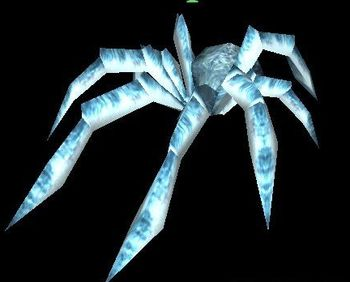

If you cant outregen area damage in spider lair, get yourself Ice Crystal.
When fighting, play on range with (QE) so you dont catch agro, or do full burst with Q F R Q T Q E Q.
Use W to dodge Spider Thread if you play solo, or use it for Frost Wave if you cant dodge it with your current movement speed.